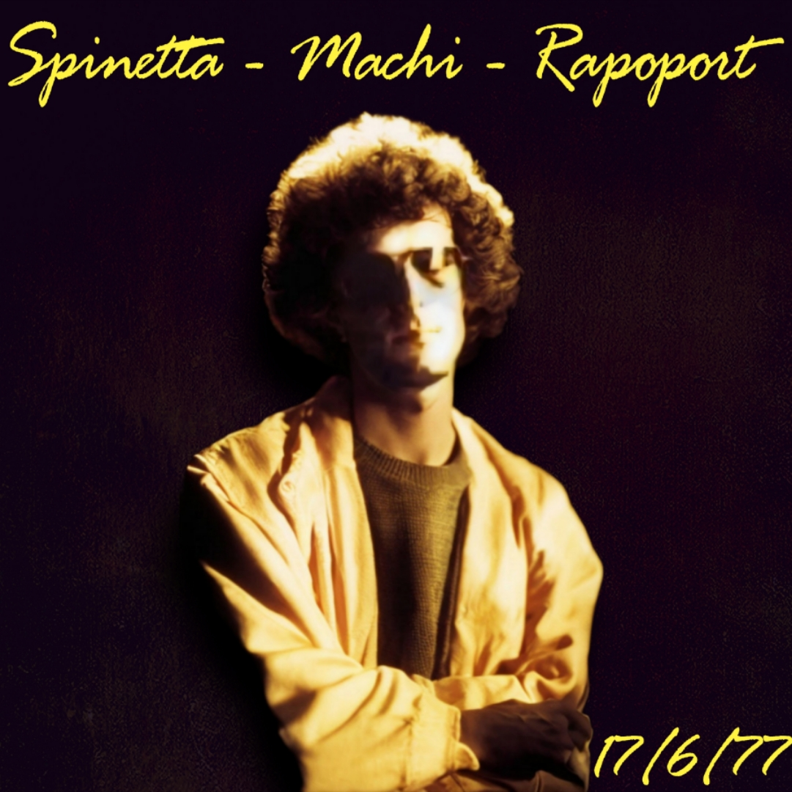

17 de Junio, 1977 - Buenos Aires, Argentina

Entre los registros menos documentados de la carrera de Luis Alberto Spinetta se encuentra este recital realizado el 17 de junio de 1977, correspondiente a una breve etapa posterior a la disolución de Invisible. En ese período, Spinetta se presentó en formato de trío junto al bajista Machi Rufino y el baterista Osvaldo Rapoport.
El concierto refleja un momento de transición dentro de su obra. El repertorio combinaba composiciones de distintas etapas —incluyendo material de Pescado Rabioso e Invisible— interpretadas con un sonido directo y eléctrico, donde la guitarra de Spinetta ocupa un lugar central y el trío desarrolla pasajes de gran intensidad e improvisación.
La portada de esta edición fue restaurada digitalmente a partir de una imagen de archivo, mejorando el contraste y limpiando imperfecciones para ofrecer una representación visual fiel al espíritu de la época.
Material difundido con fines culturales y de preservación histórica.